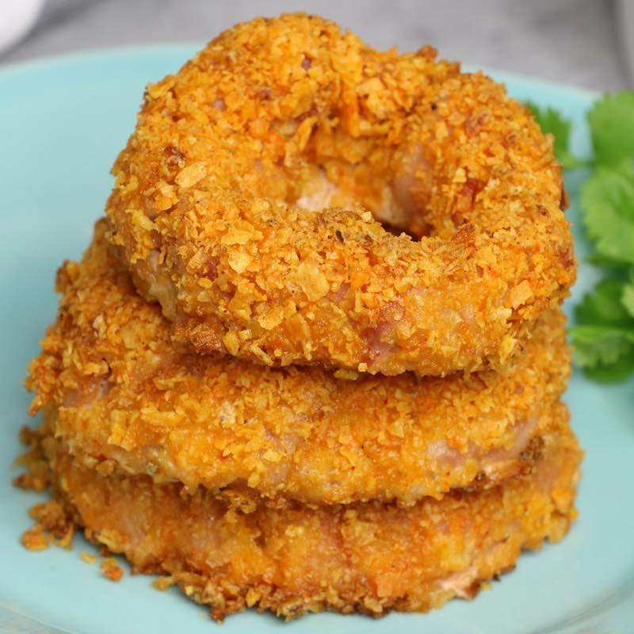

Bacon Onion Rings Recipe
The recipe source!

Description
These Bacon Onion Rings have a Doritos Crust for a crispy treat full of smokey bacon flavor! The perfect party
appetizer for Game Day and other get-togethers served with your favorite dipping sauce.
Ingredients
- 1 large white onion
- 12 strips bacon, standard or thin cut
- 2 large eggs, lightly beaten
- 12 oz Doritos or similar chips
- dipping sauces: salsa, sour cream etc. (optional)
Instructions
- Preheat oven to 375F degrees. Line a baking sheet with parchment paper
or a nonstick baking mat and set aside. Beat eggs in a small bowl and set aside.
- Add chips to a ziplock bag or food processor and pulverize into crumbs.
Put crumbs into a small bowl.
- Peel onion and slice into large 3/4 inch rings. Wrap each ring tightly with two
strips of bacon. Repeat for remaining rings.
- Brush rings with eggs. Then dredge each ring in crumbs and place onto prepared
baking sheet.
- Bake for 25 minutes in the lower third of the oven. Remove from oven. Serve with
dipping sauce and enjoy!
Back to recipes